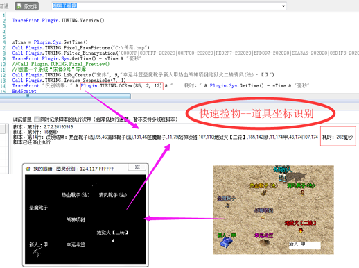

| 命令名称 | OCR 识别 |
| 命令功能 | 进行图像文字识别 |
| 语法格式 | text = TURING.OCR(Similar, Model, Interval) |
| 参数说明 |
Similar：整数型，点数匹配相似度（范围0~100，默认0匹配最高的相似） Model：整数型，设置返回结果内容，格式：默认0:识别文字，1:识别文字|第1个字x坐标,y坐标|…，2:第1个文字,x坐标,y坐标|…，3:第1个文字,x坐标,y坐标,相似度|…，4:第1个文字|第2个文字|… Interval：整数型，可选，字符之间的间隔（默认0），Model为2或3时才生效 |
| 返回值 | text：字符串型，识别得到的文字内容 |
| 按键精灵 |
复制代码
'获取文件图像数据
Call TURING.Pixel_FromPicture("C:\8201.bmp")
'二值化处理
Call TURING.Filter_Binaryzation("128-255")
'图像预览
Call TURING.Pixel_Preview()
'固定位置切割
数量 = TURING.Incise_FixedLocation(6,4,7,11,13,4)
'加载识别字库
数量 = TURING.Lib_Load("C:\识别库.lib")
'识别
TracePrint "识别方法1：" & TURING.OCR()
识别结果 = Split(TURING.OCR(0, 1), "|")
TracePrint "识别方法2：" & 识别结果(0)
n = UBound(识别结果) - 1
For i = 1 To n
TracePrint "每个字符的坐标：" & 识别结果(i)
Next
|
| 易语言 |
复制代码
.版本 2
.子程序 _临时子程序
.局部变量 图灵, 类_TURING
.局部变量 识别结果, 文本型, , "0"
.局部变量 数量, 整数型
.局部变量 i, 整数型
图灵.创建对象 ()
' 获取文件图像数据
图灵.来源_获取图片像素 (“C:\8201.bmp”)
' 二值化处理
图灵.滤镜_彩色_二值化 (“128-255”)
' 图像预览
图灵.来源_像素数据预览 ()
' 固定位置切割
数量 ＝ 图灵.切割_固定位置切割 (6, 4, 7, 11, 13, 4)
' 加载识别字库
数量 ＝ 图灵.字库_加载识别字库 (“C:\识别库.lib”)
' 识别
输出调试文本 (“识别方法1：” ＋ 到文本 (图灵.识别 ()))
识别结果 ＝ 分割文本 (图灵.识别 (0, 1), “|”, )
输出调试文本 (“识别方法2：” ＋ 到文本 (识别结果 [1]))
.变量循环首 (1, 取数组成员数 (识别结果), 1, i)
输出调试文本 (“每个字符的坐标：” ＋ 到文本 (识别结果 [i]))
.变量循环尾 ()
|
| 备注 | 【注意】【注意】【注意】返回的是相对坐标 |
| 识别效果 |  |